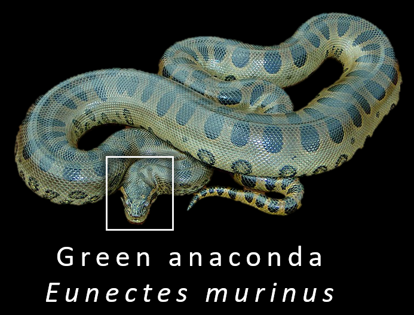
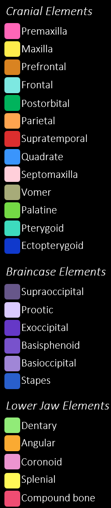

Green Anaconda Skull Anatomy
Drag to rotate, scroll to zoom.
Skull of a green anaconda, Eunectes murinus, with bones colored and labelled to demonstrate skull anatomy. This 3D model was produced from a CT scan of a Florida Museum of Natural History specimen (UF:herp:87822). Segmentation and mesh files generated using VG Studio Max. Meshes further edited in Blender. Individual shows evidence of several tumors (see medial side of right lower jaw and lateral edge of right frontal), is missing the anterior portion of the right maxilla, and shows signs of healed fracture in left lower jaw. Anatomy follows Cundall and Irish (2008) “The Snake Skull” in Biology of the Reptilia, Volume 20, Morphology H (Gans, Gaunt and Adler). Image credit: "MKAMPIS, CC BY-SA 4.0 https://creativecommons.org/licenses/by-sa/4.0, via Wikimedia Commons.

